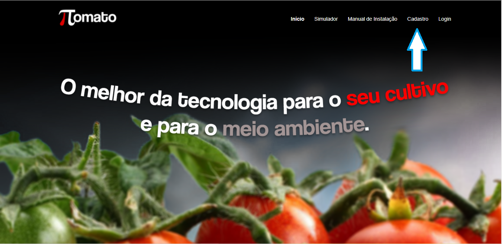
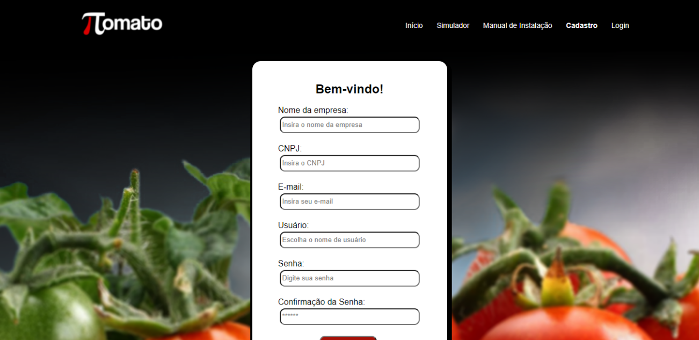
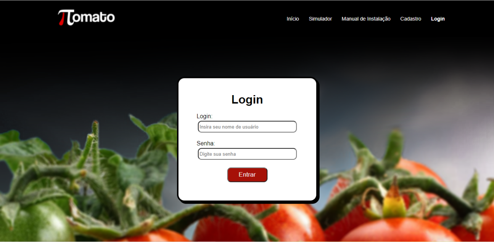
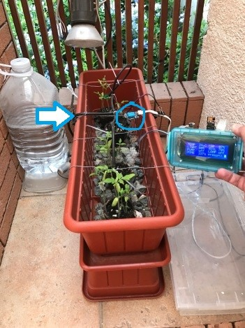
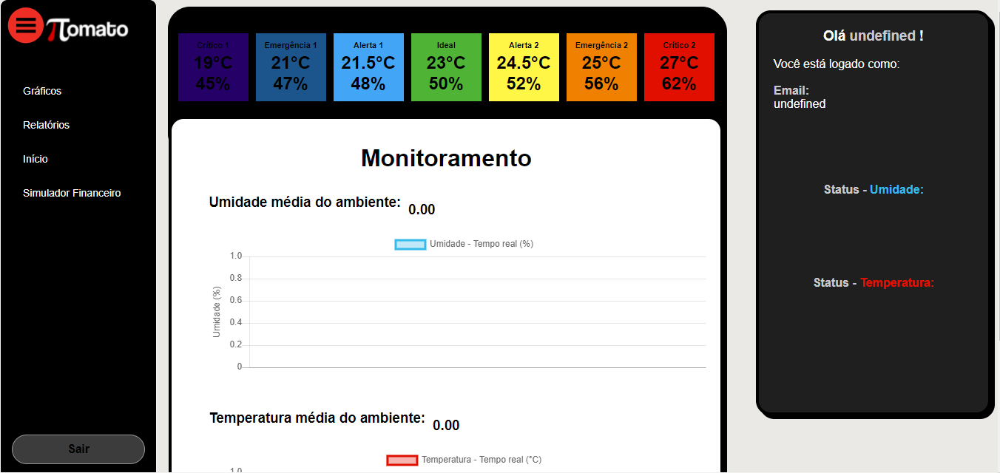

Manual de Instalação
Aqui você terá todos os resultados de seu cultivo pelo nosso sistema SAD, que tem diversas opções que você
pode entrar em ação e tomar sua decisão do que será feita com seu plantio. Assim, o próprio cliente pode
gerir seu negócio.
Criação de conta Tomatoπ
Primeiro você deve criar sua conta na aplicação Web Tomatoπ para que você possa acompanhar todas as
informações obtidas pelo equipamento. Para acessar a tela de cadastro, vá ao cabeçalho da página inicial e
clique em “Cadastro”.

Nesta página você irá preencher todos os campos para criar sua conta.

Após sua conta for criada, você irá “logar” com ela para poder ter acesso às informações de seu produto,
clique em “Login” página para “logar” no site.

Instalação dos sensores
Nossa equipe irá instalar os sensores na plantação do cliente e irá ficar responsável por toda manutenção dos sensores. Observe a seguir como o sensor irá ser instalado:

Visualização dos dados captados pelos sensores
Para conseguir acessar os dados adquiridos através dos sensores, você irá “logar” em sua conta, assim
automaticamente você será direcionado a página de “Gráficos”, onde contém todas as informações obtidas
pelos sensores em tempo real.

Dessa forma você irá ter total controle e informações sobre o plantio de seu produto, assim obtendo frutos
de melhor qualidade e com a aparência melhor.
Ainda com dúvidas? Entre em contato conosco pelo e-mail:
support@tomatopi.zendesk.com